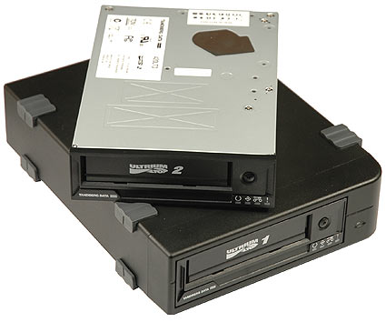

Диски


Иерархия памяти

Зачем нужен диск
- хранить данные;
- переносить данные на расстояние;
- обмениваться данными программам.
HDD
SSD
Оптический диск
Магнитная лента
Секторы и кластеры
Файлы и каталоги

Путь к файлу (каталогу)
C:/ProgramFiles/Microsoft/Office/Word/word.exeОтносительный путь к файлу (каталогу)
[полный путь к файлу] = [путь к текущему каталогу] + [относительный путь к файлу]Метаданные файла
- имя с расширением;
- метки времени;
- атрибуты;
- права доступа.
Имя и расширение файла
- .txt плоский текст.
- .png, .jpg изображения в форматах png, jpg.
- .h, .c исходные коды программ на языке программирования Си.
- .so разделяемая библиотека.
Основные разрешения
| Права | к файлам | к каталогам |
|---|---|---|
| Read | Прочитать содержимое | Список содержимого каталога |
| Write | Изменить содержимое | Изменять список файлов и их метаданные |
| Executable | Запустить файл как программу | Переход в каталог |